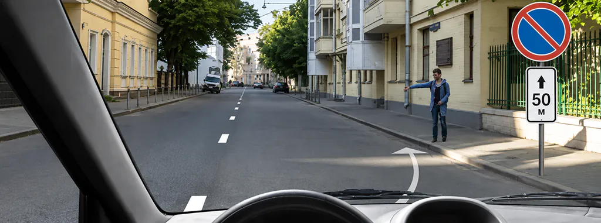
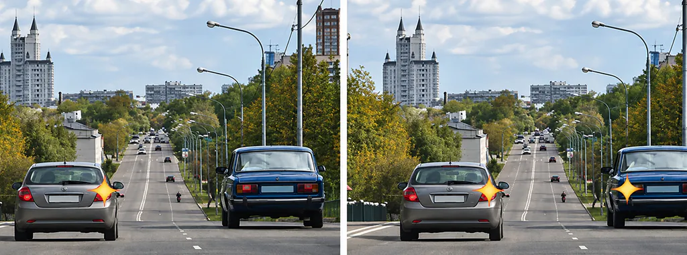

Как разбирать ошибки в билетах ПДД, чтобы не повторять их

Полезный разбор ошибки заканчивается объяснением условия, а не запоминанием правильной кнопки. Запишите, что вы не заметили, какое правило нужно было применить и как отличить задачу от похожей. После этого проверьте себя на другом вопросе и вернитесь к исходному после перерыва.
Ниже — шаблон журнала и два примера из базы A/B. Они выбраны для объяснения метода, а не как рейтинг самых частых ошибок. Мы не располагаем статистикой, позволяющей назвать их труднее остальных.
Сначала назовите причину
Слово «невнимательность» слишком широкое: оно не подсказывает, что делать завтра. Замените его наблюдаемым действием. Не прочитал «запрещено»; принял табличку расстояния за зону действия; применил правило для перекрёстка к перестроению; не заметил включённый светофор. Такие формулировки можно проверить в следующей задаче.
| Причина | Что сделать | Чем проверить |
|---|---|---|
| Неизвестный термин | Найти определение в пункте 1.2 ПДД | Объяснить отличие от соседнего термина |
| Не узнали знак или разметку | Сравнить изображения и значения | Назвать действие без подсказки по номеру ответа |
| Знаете норму, но выбрали неподходящую | Выписать условие её применения | Решить похожий вопрос с изменённым условием |
| Пропущено слово в вопросе | Сначала пересказать, что спрашивают | Сопоставить решение со всеми вариантами |
| Ответ угадан | Разобрать как ошибку, даже если кнопка верная | Повторить без открытого пояснения |
Не нужно вести длинный конспект каждого верного ответа. Записывайте то различие, которое изменило ваше решение. Если заметка не помогает распознать новую ситуацию, сократите её до конкретного признака.
Шаблон журнала ошибок
- Где: категория, номер билета и вопроса.
- Мой ход мысли: почему выбрал неверный ответ.
- Пропущенное условие: знак, слово, сигнал или действие участника.
- Норма: пункт ПДД и короткий смысл, без подмены официального текста.
- Контроль: какой похожий вопрос решить и когда вернуться.
Такой журнал можно вести в обычной заметке. В приложении удобно открыть раздел ошибок, а запись использовать как дополнение: экран хранит вопрос, вы фиксируете причину. Не нужно переносить туда весь комментарий или персональные сведения.
Пример 1. Знак узнали, действие перепутали

Можно ли Вам остановиться в указанном месте для посадки пассажира?
- Можно
- Можно, если Вы управляете такси
- Нельзя
Проверить ответ
Верно: Можно.
На рисунке знак 3.28 «Стоянка запрещена» и табличка зоны действия. Вопрос относится к остановке для посадки пассажира. Запрет стоянки сам по себе не запрещает такую остановку. Правильный ответ не зависит от того, работает ли водитель в такси: этот признак не требуется для решения данной задачи.
Плохая запись: «Билет 1, вопрос 3 — первый ответ». Она перестанет помогать при другом расположении вариантов. Рабочая запись: «Принял запрет стоянки за запрет остановки. Сначала определяю действие по п. 1.2, затем читаю знак. Сравнить 3.27 и 3.28».
Важно сохранить границы вывода. Из этого ответа не следует, что под знаком 3.28 можно остановиться где угодно: остаются общие запреты раздела 12, условия видимости и другие требования. В билете проверяется конкретная комбинация условий, а не универсальное разрешение.
Пример 2. Ответ один, основания разные

Двигаясь по левой полосе, водитель намерен перестроиться на правую. На каком из рисунков показана ситуация, в которой он обязан уступить дорогу?
- На левом
- На правом
- На обоих
Проверить ответ
Верно: На обоих.
Слева водитель правого автомобиля продолжает движение по своей полосе. Перестраивающийся с левой полосы уступает ему по первому предложению пункта 8.4. Справа оба автомобиля меняют полосу: при одновременном перестроении уступает водитель, у которого другой автомобиль справа. Поэтому в этом вопросе верны оба рисунка, но объяснение у каждого своё.
Если запомнить только «левый уступает правому», можно ошибиться в другой задаче, где правый водитель один перестраивается в занятую левую полосу. Надёжнее записать условие: «Сначала выясняю, кто меняет полосу. Одновременное перестроение рассматриваю отдельно».
Контрольный вопрос к себе: если один автомобиль не перестраивается, какая часть пункта 8.4 нужна? Если вы можете ответить без картинки, причина ошибки стала понятнее. Затем проверьте это на задаче из темы «Начало движения и маневрирование», а не на придуманной дорожной ситуации с недостающими условиями.
Почему повтор сразу после пояснения мало что показывает
Когда правильный вариант только что был открыт, его легко узнать. Это нормальная часть знакомства с материалом, но ещё не независимая проверка. Между разбором и повтором решите другие задачи или вернитесь в следующее занятие. Конкретный интервал выбирайте под свой график; мы не заявляем универсальную схему, которая гарантирует запоминание каждому.
Перед повторным ответом задайте себе три вопроса: что спрашивают; какое условие решающее; почему ближайший неверный вариант не подходит. После ответа сравните объяснение с комментарием и текстом ПДД. Если объяснения расходятся, не исправляйте правило по памяти — проверьте источник.
Когда считать ошибку разобранной
Не по одному зелёному результату. Полезные признаки: вы сами находите решающее условие, называете норму, отличаете похожую ситуацию и сохраняете это после перерыва. Это критерии учебного понимания, а не официальная шкала готовности к экзамену.
Если вопрос снова решён неверно, обновите причину. Возможно, раньше не был понятен термин, а теперь он понятен, но пропущена табличка. Повторять старую заметку механически не нужно. За одно занятие можно качественно разобрать небольшой набор; нет обязанности «обнулить ошибки» любой ценой.
Общую организацию занятий дополняет руководство по изучению билетов, правила манёвров — разбор перестроения, поворотов и разворотов. Для практики откройте PDD Drive, выберите свою категорию и начните с вопроса, который можете объяснить хуже всего.
Источники и проверка
Выберите A/B или C/D, откройте работу над ошибками и проверьте, можете ли объяснить решение без подсказки.
Частые вопросы
Нужно ли записывать номер правильного ответа?
Номер полезен для поиска вопроса, но не заменяет правило. В заметке лучше сохранять решающее условие и причину, по которой прежний ответ не подходил.
Что делать, если правильный ответ угадан?
Разобрать его так же, как ошибку: открыть пояснение, найти норму и проверить, можете ли объяснить выбор самостоятельно.
Когда повторять ошибочный вопрос?
После других задач или в следующее занятие, когда ответ уже не находится перед глазами. Затем проверить себя на похожем вопросе с другими условиями.
Можно ли доверять только комментарию тренажёра?
Комментарий помогает понять решение. При сомнении сверяйте его с действующим текстом ПДД и официальными учебными материалами, а не с запомненной формулировкой.